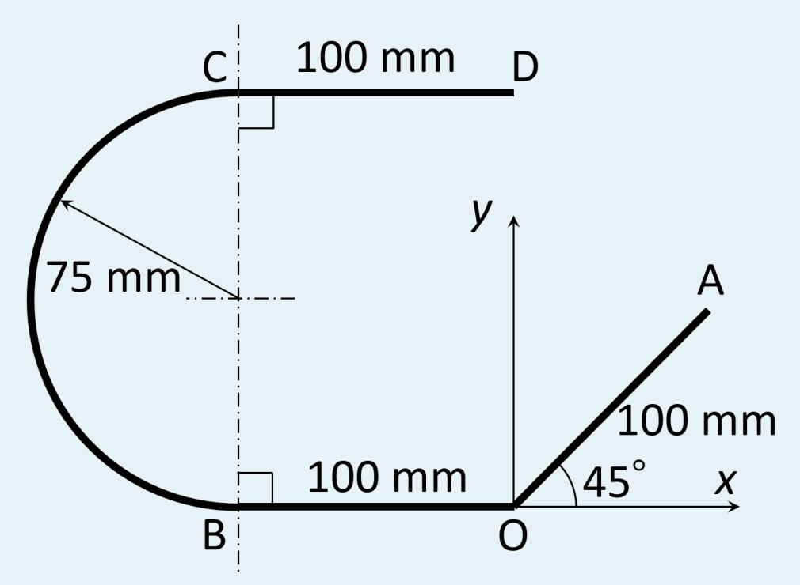
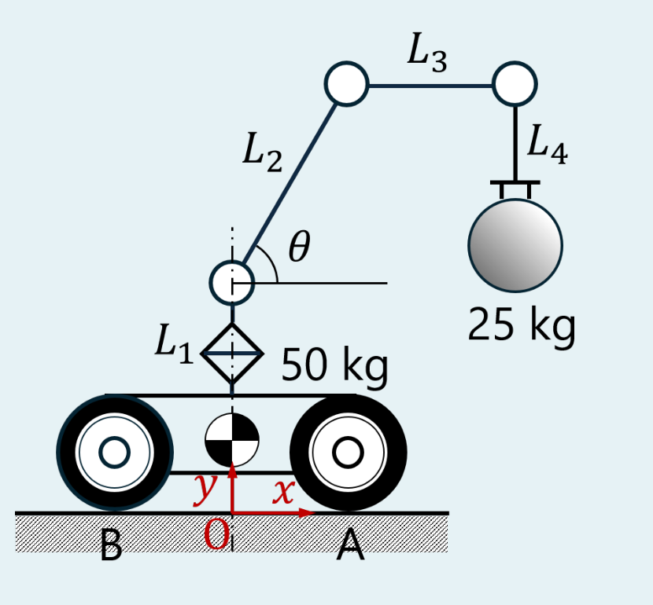
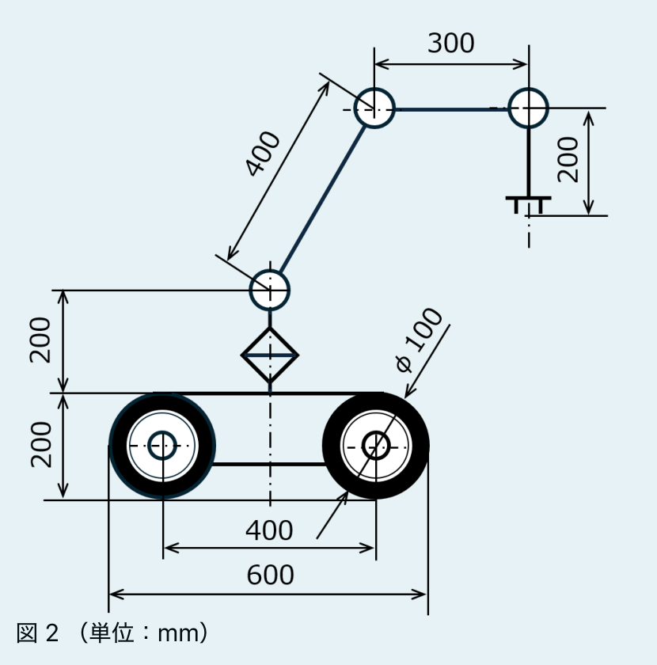

2026/10/20／第5回「重心」の Moodle 小テスト（課題 5B〔任意〕全2問）。必修の課題 5A（解説はこちら）より一段進んだ問題で、線（円弧）の重心と、ロボットの重心と転倒を扱う。教材 第5回の 2.4節（分割と合成）・3.3節（扇形）・4章（転倒）・6章（台車の重心と転倒限界）の応用。
Find the center of gravity of the line.
（まずはじめに、半径 $r$、中心角 $\alpha$ の円弧の重心〔中心からの距離〕を求める式を導出せよ。）

解答欄：半径 $r$、中心角 $\alpha$ の円弧の重心位置を $\dfrac{A}{B}\,r^{C}\alpha^{D}\sin\!\left(\dfrac{E}{F}\,r^{G}\alpha^{H}\right)$ と表したときの整数 A〜H。および、図の線全体の重心 $(x_G,\ y_G)$ [mm]。
解答（前半：円弧の重心の式を導く）
① 設定：円の中心を原点に置き、円弧が $x$ 軸について対称になるように置く。中心角（開き角）を $\alpha$ とすると、円弧は角度 $-\alpha/2\le\theta\le\alpha/2$ の範囲。円弧は一様な線なので、重心は対称軸（$x$ 軸）上にあり、中心からの距離だけを求めればよい。
② 小片：角度 $\theta$ のところで、幅 $d\theta$ の小さな弧を取る。長さは $ds=r\,d\theta$、位置は $x=r\cos\theta$（教材 3.3節の扇形と同じ極座標の考え方）。
③ 長さと一次モーメント： $$L=\int ds=\int_{-\alpha/2}^{\alpha/2}r\,d\theta=r\alpha$$ $$\int x\,ds=\int_{-\alpha/2}^{\alpha/2}r\cos\theta\cdot r\,d\theta=r^2\Bigl[\sin\theta\Bigr]_{-\alpha/2}^{\alpha/2}=r^2\left(\sin\frac{\alpha}{2}-\sin\Bigl(-\frac{\alpha}{2}\Bigr)\right)=2r^2\sin\frac{\alpha}{2}$$ （$\sin$ が奇関数なので $\sin(-\alpha/2)=-\sin(\alpha/2)$ を使った。）
④ 割る： $$\bar x=\frac{\int x\,ds}{L}=\frac{2r^2\sin(\alpha/2)}{r\alpha}=\frac{2}{1}\,r^{1}\alpha^{-1}\sin\!\left(\frac{1}{2}\,r^{0}\alpha^{1}\right)$$ ⑤ 確かめ：(i) 半円（$\alpha=\pi$）：$\bar x=\dfrac{2r}{\pi}\approx0.637r$ になる。これは半円の針金の重心としてよく知られた値で、半円板の $\dfrac{4r}{3\pi}$ より外側（円弧に近い）にあるのも自然。 (ii) 極限：$\alpha\to0$ では $\sin(\alpha/2)\approx\alpha/2$ なので $\bar x\to r$（ごく短い弧は円周上の1点と同じ）✓。 (iii) 全円（$\alpha=2\pi$）：$\sin\pi=0$ で $\bar x=0$（円の中心）✓。 (iv) 単位：$r$ [長さ] × 無次元で、長さ ✓。
（記号の注意：教材 3.3節の扇形は半頂角 $\alpha$（開き角が $2\alpha$）で、重心は $\dfrac{2r\sin\alpha}{3\alpha}$ だった。この問題の解答欄には $\dfrac{E}{F}$ の分数が入る形があり、$\sin\!\left(\dfrac12\alpha\right)$ と書く全角の $\alpha$ だと読むと形が合うので、そう読んだ。半頂角で読むなら $\bar x=\dfrac{r\sin\alpha}{\alpha}$（$A=B=1,\ C=1,\ D=-1,\ E=F=1,\ G=0,\ H=1$）になる。どちらの流儀かは問題文の「中心角」の読みで決まり、公式解答とは未照合。）
答え（前半）：$A=2,\ B=1,\ C=1,\ D=-1,\ E=1,\ F=2,\ G=0,\ H=1$（$\bar x=\dfrac{2r}{\alpha}\sin\dfrac{\alpha}{2}$）
解答（後半：線全体の重心）
⑥ 形を読む：O を原点とし、図の寸法から、線は4本の部分でできている：①OA（O から右上 45° に 100 mm）、②OB（O から左へ 100 mm）、③円弧 BC（B から C までの半円、半径 75 mm、中心は $(-100,\ 75)$、左側に膨らむ）、④CD（C $(-100,\ 150)$ から右へ 100 mm、D は $(0,\ 150)$）。B と C は同じ鉛直線上（中心の真上と真下）で、半径 75 の2倍が $B$–$C$ の距離 150 mm と合う。
⑦ 表にする（量は長さ $L_i$、重心位置は各部分の中点。円弧だけ前半の式を使う）：
| 部分 | 長さ $L_i$ [mm] | 重心 $x_i$ [mm] | 重心 $y_i$ [mm] | $L_ix_i$ | $L_iy_i$ |
|---|---|---|---|---|---|
| ① OA | 100 | $50\cos45^\circ=35.36$ | $50\sin45^\circ=35.36$ | 3535.5 | 3535.5 |
| ② OB | 100 | $-50$ | 0 | −5000 | 0 |
| ③ 円弧 BC | $\pi\cdot75=235.62$ | $-100-\dfrac{2\cdot75}{\pi}=-147.75$ | 75 | −34812 | 17671 |
| ④ CD | 100 | $-50$ | 150 | −5000 | 15000 |
| 合計 | 535.62 | −41276 | 36207 |
（円弧の重心：中心 $(-100,75)$ から左へ $\dfrac{2r}{\pi}=47.75$ mm なので $x=-147.75$、$y=75$。半円なので前半の式で $\alpha=\pi$。円弧の長さは $r\alpha=75\pi=235.62$。）
⑧ 割って重心： $$x_G=\frac{-41276}{535.62}=-77.06\ \mathrm{mm},\qquad y_G=\frac{36207}{535.62}=67.60\ \mathrm{mm}$$ ⑨ 確かめ：(i) 範囲：線は $x:-175\sim71$、$y:0\sim150$ に収まり、$(-77.1,\ 67.6)$ はその内側。円弧とその左側の長い部分が重いので、$x_G$ は負の側に寄る ✓。 (ii) $y_G$：下の線（OB）が 0、上の線（CD）が 150、円弧が平均 75 なので、$y_G$ は 75 に近い値になるはず。OA が下寄り（平均 35）なので少し下がって 67.6 ✓。 (iii) 重心は線の上にない：$(-77.1,\ 67.6)$ は、円弧の内側の空間にある（重心は物体の外にも出る）。 (iv) 計算は Python（draft/check_quiz05b.py）でも確認済み。
答え：$(x_G,\ y_G)=(-77.1,\ 67.6)$ mm
図1に示すように、図2のような仕様の移動式ロボットアームが、アーム先端に質量 25 kg のおもりを吊るしている。リンク $L_3$ は常に水平、$L_4$ は常に垂直を保つ。アームを含むロボット本体の重心は常に車軸 A と B の中間にあり、その質量は 50 kg である。座標系 O−$xy$ を図1のように設定するとき、以下の問いに答えなさい。
(a) リンク2の角度 $\theta=60^\circ$ のとき、系全体の重心の $x$ 座標を求めなさい。
(b) 角度 $\theta$ を変化させ、アームをゆっくりと前方（図の右方向）へ伸ばしていくとき、ロボットが前方へ転倒を始めるときの $\theta$ を求めなさい。


解答欄：(a) [mm] (b) [°]。
解答
① 系を切り出して、質点2つに置き換える：「アームを含むロボット本体」は質量 50 kg、重心は車軸 A・B の中間（図1の原点 O の真上）なので、$(x,\ y)$ のうち $x=0$ の1つの質点でよい。もう1つは、先端のおもり 25 kg。リンクの質量は本体の 50 kg に含まれているので、別に数えない（問題文の前提）。
② 座標軸：図1のとおり、O を車軸の真ん中の地面（床）、右（A の側）を $+x$、上を $+y$ とする。車軸 A は $x=+200$ mm、B は $-200$ mm（図2の車軸間 400 mm の半分）。タイヤの接地点も同じ $x$ にあるので、転倒の支点は A の接地点 $x=+200$ mm。
③ おもりの位置（$x$ 座標）：アーム根元のピンは O の真上（$x=0$）。$L_2$ は長さ 400 mm、水平から $\theta$ 傾いて右へ伸び、その先に水平の $L_3$（300 mm）が右へ、さらに垂直の $L_4$ が真下へ下がるので、おもりの $x$ 座標は $$x_m=400\cos\theta+300\ \ [\mathrm{mm}]$$ （$L_4$ は垂直なので、$L_3$ の先端の真下におもりがある。$L_4$ の長さ 200 は $y$ にだけ効き、$x$ には効かない。）
④ (a) 全体の重心（教材 1.3節。質点2つの合成）：$\theta=60^\circ$ のとき $x_m=400\cos60^\circ+300=200+300=500$ mm。 $$x_G=\frac{50\times0+25\times500}{50+25}=\frac{12500}{75}=166.7\ \mathrm{mm}$$ ⑤ (b) 転倒を始める条件（教材 4.2節）：全体の重心の鉛直線が支持面（接地点 B から A の間）の外に出ると転倒する。前方へ倒れ始める限界は、重心の $x$ 座標が前輪 A の接地点 $x=200$ mm に来たとき（ちょうどそこでは、床の反力がすべて A に集まり、B の反力が 0 になる）： $$x_G=\frac{25\,x_m}{75}=\frac{x_m}{3}=200\ \ \Longrightarrow\ \ x_m=600\ \mathrm{mm}$$ $$400\cos\theta+300=600\ \Longrightarrow\ \cos\theta=\frac{300}{400}=0.75\ \Longrightarrow\ \theta=\cos^{-1}0.75=41.4^\circ$$ ⑥ 確かめ：(i) 向き：腕を伸ばすほど $\theta$ が小さくなり $\cos\theta$ が大きくなって $x_m$ が増える。$\theta=60^\circ$ で $x_G=166.7<200$（倒れない）、$\theta=41.4^\circ$ で 200（限界）、$\theta=0$（水平いっぱい）では $x_m=700$、$x_G=233>200$（倒れる）で、話が通る ✓。 (ii) B の反力で確かめ：限界では B の反力が 0 のはずなので、A の接地点まわりで重力のモーメントがつり合うことを見る。本体 $50g$ は A の 200 mm 左（$x=0$ と $x=200$ の差）で $50g\times200=10000g$、おもり $25g$ は A の 400 mm 右（$x=600$ と $x=200$ の差）で $25g\times400=10000g$。両者が等しいので ✓（向きは逆で、打ち消し合う）。 (iii) 単位：mm どうし、質量比は無次元 ✓。
答え：(a) $x_G=166.7$ mm (b) $\theta=41.4^\circ$（$\cos\theta=0.75$）